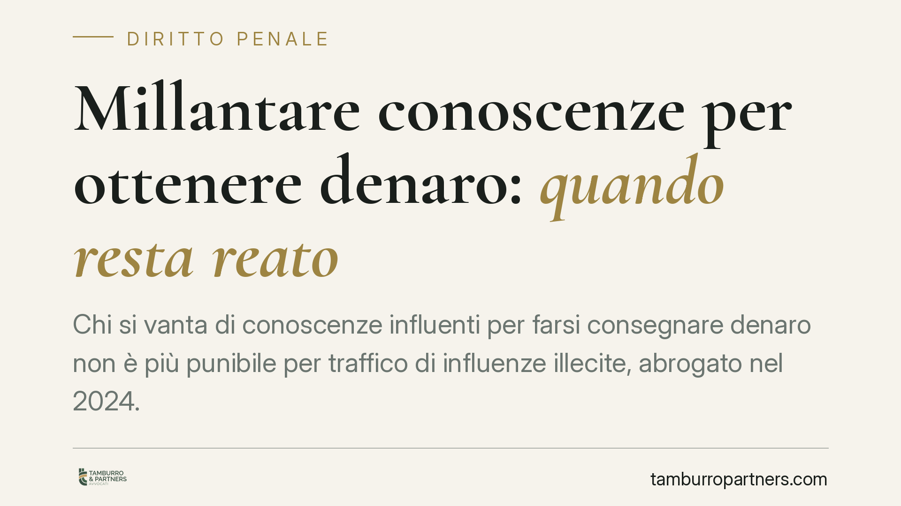

Millantare conoscenze per ottenere denaro: quando resta reato
Chi si vanta di conoscenze influenti per farsi consegnare denaro non è più punibile per traffico di influenze illecite, abrogato nel 2024. Ma la vicenda non finisce qui: se alla vanteria si aggiungono artifici concreti che ingannano la vittima e ne provocano un danno economico, la condotta può essere riqualificata come truffa. Ecco i confini reali dopo la riforma Nordio.

La successione delle norme: cosa è stato abrogato e quando
Per capire la questione occorre ordinare la successione normativa, spesso confusa nel dibattito pubblico.
Il reato di millantato credito (art. 346 c.p.) è stato abrogato dalla L. 9 gennaio 2019, n. 3 (c.d. "Spazzacorrotti"). Parte della condotta è confluita nel traffico di influenze illecite (art. 346-bis c.p.), figura che puniva chi, vantando relazioni con un pubblico ufficiale, si faceva dare denaro o altra utilità come prezzo della propria mediazione.
È questo secondo reato — il traffico di influenze illecite, art. 346-bis c.p. — a essere stato abrogato dalla L. 9 agosto 2024, n. 114 (riforma Nordio). Non il millantato credito, che era già uscito dal codice cinque anni prima.
Il risultato è che oggi la mera vanteria di conoscenze, non accompagnata da ulteriori elementi, non integra più alcuna delle due fattispecie. Chi si limita a dire di "conoscere la persona giusta" e a farsi remunerare per questo, dopo l'agosto 2024, non commette per ciò solo un reato contro la pubblica amministrazione.
Dove finisce l'impunità: la soglia della truffa
L'assenza di un reato specifico non significa impunità generalizzata. Il punto è strutturale.
La vanteria semplice — parole, promesse vaghe, esibizione di rapporti insussistenti — resta fuori dal penale. Diverso è il caso in cui la vanteria si inserisca in una truffa ex art. 640 c.p.
La truffa richiede tre elementi cumulativi: artifici o raggiri (una messa in scena concreta, non la sola parola), l'induzione in errore della vittima e un danno patrimoniale con corrispondente ingiusto profitto. Quando chi millanta costruisce un inganno concreto — documenti falsi, false conferme, incontri simulati, promesse di risultati con richieste di denaro "per le spese" — e ottiene così somme dalla vittima, la condotta può essere ricondotta alla truffa.
È un orientamento consolidato della giurisprudenza di legittimità: l'abrogazione di una fattispecie specifica non impedisce l'applicazione della norma generale sulla truffa, quando ne ricorrano tutti gli elementi. La linea di confine sta proprio nella concretezza dell'artificio e nell'esistenza di un danno economico effettivo.
Cosa cambia per chi ha versato denaro
Per chi ha consegnato somme a un sedicente "mediatore" cambia la qualificazione della propria posizione, non necessariamente la tutela.
Se l'inganno era solo verbale e generico, difficilmente si configura un reato: resta eventualmente la via civile per la restituzione. Se invece c'è stata una messa in scena — prove documentali fabbricate, false rassicurazioni ripetute, un impianto ingannatorio — la strada penale della truffa è percorribile.
Sul piano della procedibilità, la truffa "semplice" dell'art. 640 c.p. è procedibile a querela della persona offesa. Il termine per proporla è di tre mesi dalla conoscenza del fatto (art. 124 c.p., come modificato dal D.Lgs. 150/2022, riforma Cartabia). Le ipotesi aggravate previste dall'art. 640, comma 2, c.p. sono invece procedibili d'ufficio.
La tempestività è quindi decisiva: chi tarda oltre i tre mesi rischia la decadenza dalla querela nelle ipotesi non procedibili d'ufficio.
Cosa fare in concreto
- Conservate ogni prova. Messaggi, mail, ricevute di pagamento, bonifici, registrazioni e documenti ricevuti: sono la base per dimostrare l'artificio e il danno.
- Ricostruite la cronologia. Annotate quando avete appreso di essere stati ingannati: da quel momento decorre il termine di tre mesi per la querela.
- Distinguete vanteria e inganno. Verificate se vi sono stati elementi concreti (documenti, false conferme) e non solo promesse a parole: è questo a spostare la vicenda verso la truffa.
- Valutate anche la via civile. Se manca la rilevanza penale, l'azione per la restituzione delle somme resta comunque esperibile.
- Consigliamo di richiedere una valutazione professionale prima di sporgere querela, per inquadrare correttamente la fattispecie ed evitare iniziative inefficaci sul piano probatorio.
---
*Contributo informativo a cura di Tamburro & Partners - Avv. Giuseppe Tamburro. Non costituisce parere legale.*
Ogni condominio ha una storia a sé.
Se gestisci un'amministrazione e vuoi un confronto su una specifica questione condominiale, scrivi allo studio. Ti rispondiamo entro un giorno lavorativo.